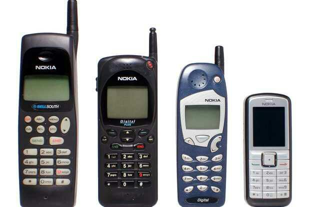

HISTORY OF PHONES

Martin Cooper of Motorola made the first publicized handheld mobile phone call on a prototype DynaTAC model on April 4, 1973. This is a reenactment in 2007.
A handheld mobile radio telephone service was envisioned in the early stages of radio engineering. In 1917, Finnish inventor Eric Tigerstedt filed a patent for a "pocket-size folding telephone with a very thin carbon microphone".
Early predecessors of cellular phones included analog radio communications from ships and trains. The race to create truly portable telephone devices began after World War II, with developments taking place in many countries.
The advances in mobile telephony have been traced in successive "generations", starting with the early "0G" (zeroth generation) services, such as Bell System's Mobile Telephone Service and its successor, the Improved Mobile Telephone Service.
These "0G" systems were not cellular, supported few simultaneous calls, and were very expensive.
The Motorola DynaTAC 8000X. First commercially available handheld cellular mobile phone, 1984.
The first handheld mobile cell phone was demonstrated by Motorola in 1973.
The first commercial automated cellular network was launched in Japan by Nippon Telegraph and Telephone in 1979.
This was followed in 1981 by the simultaneous launch of the Nordic Mobile Telephone (NMT) system in Denmark, Finland, Norway and Sweden.Several other countries then followed in the early to mid-1980s.
These first-generation (1G) systems could support far more simultaneous calls, but still used analog technology.
In 1991, the second-generation (2G) digital cellular technology was launched in Finland by Radiolinja on the GSM standard. This sparked competition in the sector as the new operators challenged the incumbent 1G network operators.
Ten years later, in 2001, the third generation (3G) was launched in Japan by NTT DoCoMo on the WCDMA standard. This was followed by 3.5G, 3G+ or turbo 3G enhancements based on the high-speed packet access (HSPA) family, allowing UMTS networks to have higher data transfer speeds and capacity.
By 2009, it had become clear that, at some point, 3G networks would be overwhelmed by the growth of bandwidth-intensive applications, such as streaming media.
Consequently, the industry began looking to data-optimized fourth-generation technologies, with the promise of speed improvements up to ten-fold over existing 3G technologies.
The first two commercially available technologies billed as 4G were the WiMAX standard, offered in North America by Sprint, and the LTE standard, first offered in Scandinavia by TeliaSonera.
Click here to go back to the home page